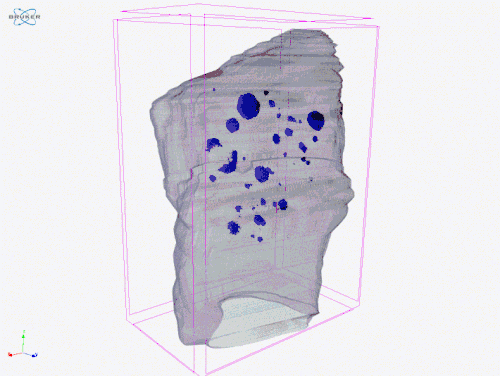
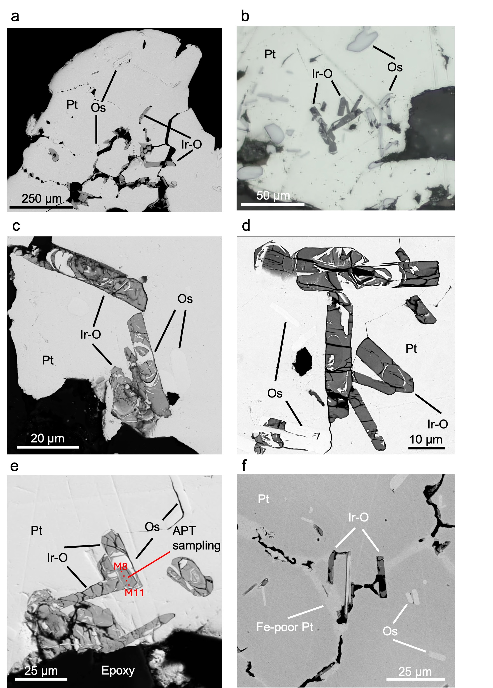
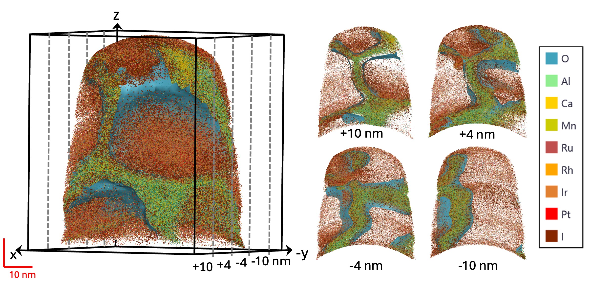

Where PGMs occur and why they matter
Platinum-group elements (PGE) are among the least abundant elements in the Earth's crust and mantle (Lyubetskaya and Korenaga, 2007). Their concentrations are several orders of magnitude lower than those of the rare earth elements. Nevertheless, more than 169 platinum-group minerals (PGM) have been approved by the International Mineralogical Association (Zaccarini et al., 2026). These minerals occur in mantle xenoliths, ophiolites, and crystalline ultramafic rocks. They may also be present in rich sulfide ores and as nm-scale inclusions in minerals from volcanic rocks such as picrites and komatiites. PGM also occur in placers, both modern, such as those of the Urals and Alaska, and ancient, such as the Witwatersrand Basin, where small detrital PGM have been found.
This page attempts to make a short summary of my work on PGM. It begins with placer concentrates from the Koryak-Kamchatka belt, where PGM assemblages are described before the bedrock source is fully resolved. It then moves into PGM hosted by lode chromitites and dunite of Ural-Alaskan type complexes from Far East Russia, where inclusions and textural relations begin to challenge simple orthomagmatic models. From there, the scale shifts again to small PGM in volcanic rocks – inclusions in Cr-spinel that give direct evidence of platinum-group elements fractionation in magmatic processes, before the later part of the page turns to remobilization, rare new minerals, and finally the confirmed formation of natural IrO2.

Placer assemblages
My work on PGM began during my undergraduate studies with placers, because they provide a concentrated and surprisingly information-rich entry point into ultramafic source systems. In the Prizhimny Creek placer of the Koryak Highlands (Kutyrev et al., 2018), Pt-Fe alloys form grains up to a few mm in size, with inclusions of native osmium, PtRh intermetallic material, sulfides and arsenides of the platinum-group elements, chromite, and Cr-magnetite. In this case, the data pointed toward a weakly eroded Ural-Alaskan-type system and suggested clinopyroxenites of the Prizhimny massif as a plausible bedrock source. This was interesting, as the complex is small, likely poorly eroded – which is clear from its gabbroic composition and rarity of ultramafic rocks – and controversially belongs to the Ural-Alaskan type (Kutyrev and Zhirnova, 2019).
Further work was dedicated to strongly eroded complexes of the Epilchik group – eponymous Epilchik complex, Itchayvayam and Matysken. In these cases, the sources of PGM were much more obvious.

Lode chromitites and bedrock sources
In placers, the question is what assemblage had survived erosion and transport, and how they are characteristic of a bedrock source, and whether there are mineralogical hints on economic potential. Bedrock samples give an opportunity to solve genetic problems.

The mass-balance problem
Platinum-group elements in basaltic or ultramafic magmas are normally present at very low levels, usually in the ppb range for Pt and Pd, and ppb decimals for others. Even strongly enriched, economically valuable rocks typically contain only ppm-level Pt. To form a Pt-Fe nugget that one can see without a microscope, platinum must therefore be concentrated by many orders of magnitude, from trace levels in melt to local concentrations of wt.% and finally to a nearly pure alloy containing tens of wt.% Pt. That 9-fold degree of enrichment is difficult to explain by simple direct crystallization from a small ordinary magmatic reservoir.
In case of sulfide deposits, such enrichment is explained through extremely high PGE partitioning coefficient between sulfide and silicate liquid. But what is the explanation in oxidized arc systems, where we do not see evidence of sulfides participation in early stage PGE extraction from magma?
The first idea that comes to mind is a multistage process involving desulfidation. In principle, PGE can be accumulated by sulfide, that subsequently is dissolved. Such cases indeed exist in nature, and in a few cases in our samples we clearly observed a result of sulfide breakdown. However, in the cases of complexes I studied – of Ural-Alaskan type – this seems unlikely. The reason is high oxygen fugacity in arc magmas that makes early sulfide saturation (and, consequently, sulfide rich ultramafic rocks) very unlikely. This is confirmed by both studies of volcanic rocks syngenetic to Ural-Alaskan complexes of the Olyutorsky (aka Achayvam-Valaginsky) terrane. See Kutyrev et al. (2021) and Chayka et al. (2025).

Inclusions in PGM
The inclusions we studied are found in isoferroplatinum grains from Ural-Alaskan type complexes and placers related to ophiolite peridotites. In case of the Matysken complex, we expected to find there phases corresponding to the mineralogy of the host dunite – high-Mg olivine and, possibly, clinopyroxene. They indeed contained diopside, but also hydrous silicates, apatite, plagioclase, K-feldspar, silica, and other phases that sit uneasily inside any straightforward orthomagmatic picture for platinum mineralization in dunite-hosted chromitites. Similar contrasts had already been noted in alluvial nuggets, but here they could be examined directly in bedrock PGM intergrown with Cr-spinel.
Subsequently, we expanded our works on ophiolitic peridotites – Adamsfield placer in Tasmania (Kutyrev et al., 2024). This is the only placer in history where Os-Ir-Ru alloys were mined as a principal component. In spite of a different type of ultramafic source and different host, there were clear commonalities between the inclusions. In particular, they both have more felsic and hydrous minerals than could be expected for their host rock.


PGM in primitive arc magmas and volcanic rocks
The next step in this work moved away from coarse nuggets and chromitite schlieren and into primitive arc magmas, where PGE can be traced before they are concentrated into obvious ore-scale minerals. That brings the problem closer to first-order magmatic controls. In the Olyutorsky arc, including the Tumrok Range, the volcanic rocks can have very high Mg content (up to 36 wt% recalculated dry rock). This is, of course, mostly the result of olivine accumulation. The parental melt of these rocks does not have more than 16–17 wt% MgO. They preserve olivine with Fo contents up to 93 mol% and high-Cr# spinel, while melt inclusions record Mg-rich and, in the southern segment, distinctly high-K, shoshonitic, compositions. Cr-spinel in these rocks contains significant number of nm-scale PGM inclusions that can be detected via scanning electron microscopy but much better are localized through LA-ICP-MS. Namely, they appear as spikes on time-resolved spectra. Tumrok volcano-plutonic complex, this became a linked volcanic and intrusive framework rather than a volcanic story alone.
The Tolbachik work focused on the behaviour of noble metals during differentiation of primitive arc magmas. It showed that Ir, Ru, and Rh are compatible, whereas Cu and Pd are incompatible, which indicates that sulfide saturation did occur but did not control the bulk noble-metal budget of the magma. The negative Ru anomaly in Tolbachik lavas points to relatively oxidized conditions in the mantle wedge and links PGE behaviour to Cr-spinel, laurite, and other Ru-bearing phases. Together with the study of noble-metal nanoparticles in olivine-hosted sulfide inclusions, this showed that PGE redistribution starts early, during magma evolution itself, rather than only at the stage when large alloys or other unusual phases appear in ultramafic rocks.

Redistribution, alteration, and new minerals
Another problem is how they were modified after formation. Work on awaruite mineralization and hydrous metamorphism treated PGE behavior under low-temperature overprint directly, while 190Pt-4He dating of platinum mineralization in Ural-Alaskan-type complexes addressed remobilization in time as well as in texture. These studies pushed the interpretation away from a purely magmatic framework and toward one in which serpentinization, hydrous alteration, and late-stage fluid pathways can reorganize metal budgets that were initially established in much hotter systems.
The same change in emphasis appears in the new-mineral work. Sidorovite, PtFe3, was described from the Snegovaya River placer as part of complex Pt-Fe intermetallic assemblages and secondary rims formed after isoferroplatinum. Its proposed formation through incorporation of Fe0 during low-temperature alteration linked Pt mineralogy directly to reduction processes associated with H2-bearing fluids generated during serpentinization. Kufahrite extended that interest in rare Pt-bearing phases further. Taken together, these papers were not simply taxonomic additions. They were a way of tracking subtle low-temperature modification in systems that had previously been described mostly in terms of primary alloy crystallization. By this point, the central question had become not just which PGM are present, but which of them are primary, which are secondary, and what that distinction implies for the history of ultramafic rocks, chromitites, and related placers.

Iridium oxide and the redox endmember
The iridium oxide study resolved a problem that first appeared in the Prizhimny Creek placer assemblages. In that work, native osmium was described as being replaced during oxidation by a phase with IrO2 composition, but its structure and oxidation state were not yet demonstrated. The later Chemical Geology paper confirmed this phase as IrO2. X-ray absorption spectroscopy showed Ir4+ bonded to oxygen, and atom probe tomography showed that the oxide forms thin films along the boundaries of metallic PGE-rich domains. Mass-balance relationships also showed that Rh, Ru, and Pt remain mostly metallic, whereas Os is partly oxidized and strongly depleted relative to the original Os-Ir-Ru alloy.
The main result is the redox inconsistency recorded at the nanoscale. IrO2 requires highly oxidizing conditions, but metallic Ru persists in the same altered alloy, although equilibrium phase relations would normally place Ru oxidation before Ir oxidation. This is not compatible with a simple closed-system equilibrium path. It points instead to local redox gradients, kinetic limitations, and incomplete reaction at grain-boundary scale. The study therefore links the earlier observations on placer PGM, chromitite mass balance, inclusions, alteration, and new minerals to a direct nanoscale example of PGM reorganization during oxidation. Alternatively, of course, present thermodynamic data on PGE oxides might just be incomplete. See Kutyrev et al. (2018).

